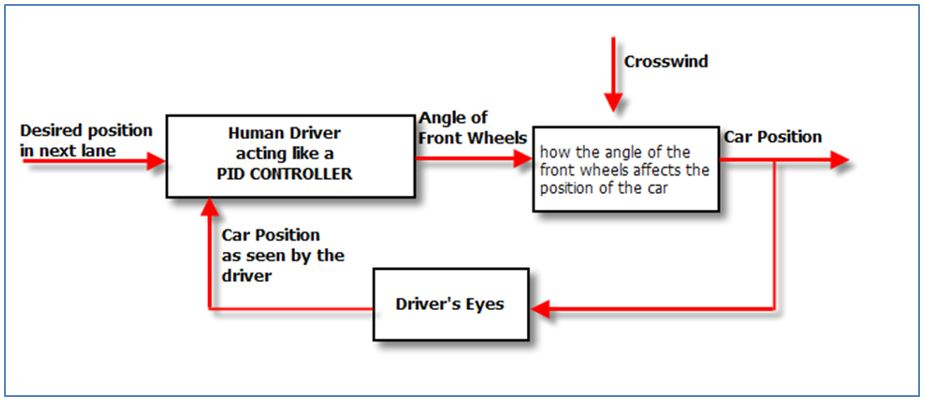
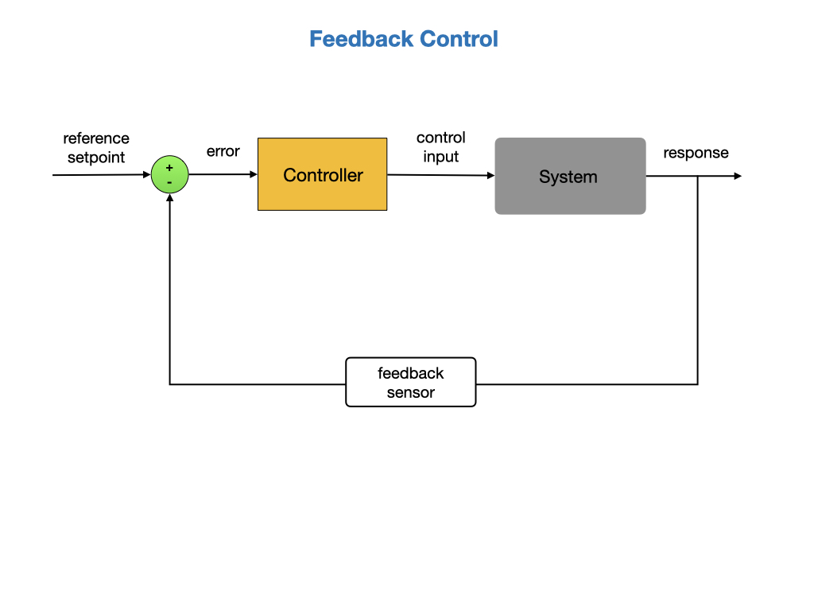
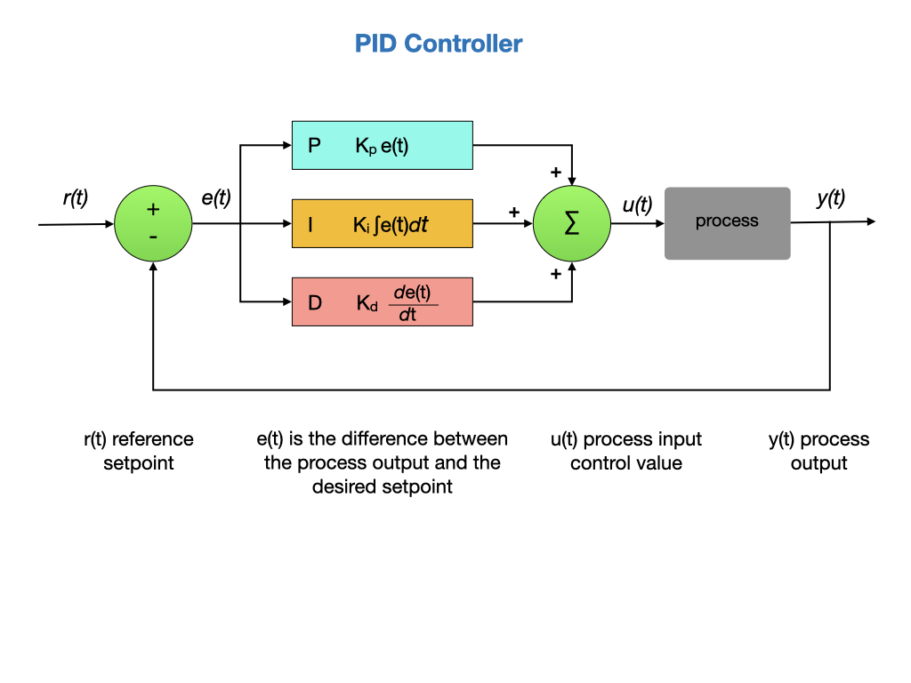
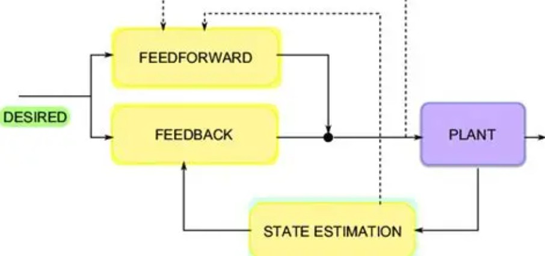
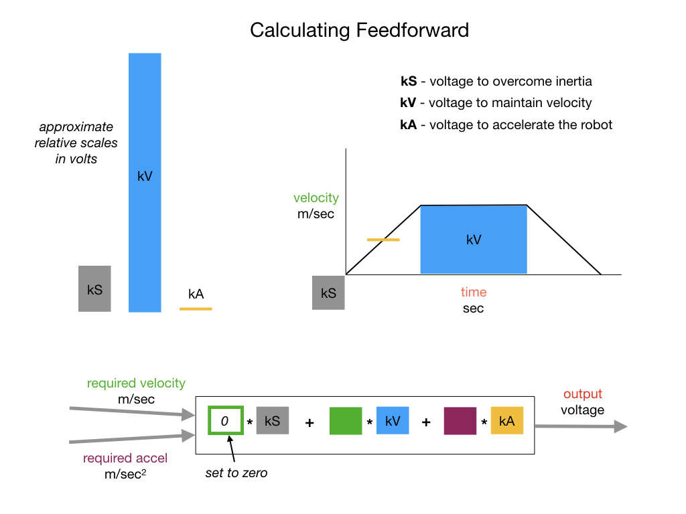
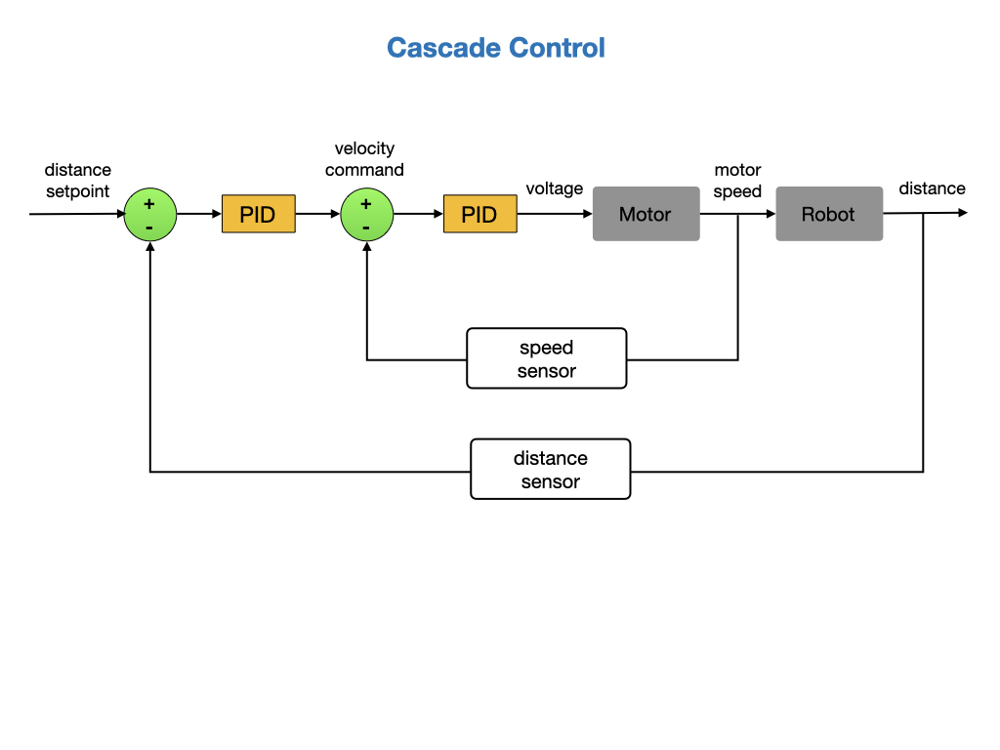

Classical Control
Control Theory deals with the question of “How do we get a system to do what we want”? For robotic systems that normally means how do we move it, or one of its subsystems, from one position to another? In the Geometry section we descibed the Pose of an object, which is the position and orientation of an object in 2D and 3D space. For robotic systems we are concerned with how we can ensure a smooth transition from one pose to another. Or more technically, how can we get the pose of the system to change as a function of time. Our primary mechanism for doing that is the PID Controller, which is a commonly used feedback controller.
To give you a better idea of what a PID Controller is, let’s start with an example. You are all nearing driving age, so let’s use an example of a Human Driver acting like a PID Controller:

In this case a driver is driving down the road and wants to change lanes. To do so, the driver starts turning the steering wheel to turn the front wheels. But as they are doing so, the car is hit by a crosswind (a distubrance) pushing back against the car so it is making it harder to change lanes. The driver’s eyes see the position of the car changing lanes and increases the turn (making it sharper) to compensate for the crosswind. Next, the drivers eye’s see the car’s position in the new lane and the driver starts to decrease the turn into the new lane. The driver keeps decreasing the turn until the car is going straight in the new lane. In this case the human driver was acting like a PID controller. The drivers eyes were the sensor observing the effect of the motor change (turning the steering wheel) and increased or decreased the rate of turn based on the feedback from the sensor. This is the essence how a PID controller works.

A feedback controller takes a reference setpoint as an input and compares it to the current output response of the system. The output response is measured by sensors, such as encoders, that are usually mounted on the system. If there is a difference between the setpoint and the system’s current response then the controller will adjust its control input signals to try and comply with the setpoint.
Let’s say that we want the system to move at 10 meters per second. Then we will compare the current speed of the system to 10 m/s and compute the difference. If the system speed is below the required speed then the controller will increase the control input. Conversely, if the system speed is above the required speed then the controller will decrease the control input.
In this eample, the controller is calculating the motor voltage and then adjusting it as needed. As programmers, our problem is that we are responsible for developing the controller! Luckily, this problem has been solved by others a long time ago. The solution is to use a PID Controller!
A PID Controller is a mathematical model to respond to feedback and adjust watever mechanism it is controlling. The PID Controller (which stands of Proportional-Integral-Derivitive controller) is a widely used feedback sontrol mechanism in andustrial automation. It continuously calculates the error value as the difference between a desired setpoint and a measured process variable, and adjusts the control inputs to minimize this error. Sounds perfect for what we need!
For an introduction to PID control watch the video Understanding PID Control - Part 1 by Brian Douglas.
A detailed diagram of a PID controller is shown below. To understand each of the components of this diagram read the Introduction to PID section of the FRC documentation.

The PIDController Class
With the above PID diagram in mind, let’s take a look at the PIDController class supplied by the WPI library. The key part of this class is the calculate() method that computes the PID value used to control the system. You’ll find this method at around line 312 of the PIDController class.
Let’s start on the left side of the above diagram. The current output response of the system, which we’ll refer to as the measument, is passed to the calculate() method and subtracted from the setpoint to come up with the position error. A check is made in case the measurement input wraps around, such as in the case of gyro wrapping at 360 degrees. The position error will be multiplied by the Proportional value.
public double calculate(double measurement) {
m_measurement = measurement;
m_prevError = m_positionError;
if (m_continuous) {
m_positionError =
MathUtil.inputModulus(m_setpoint - measurement, m_minimumInput, m_maximumInput);
} else {
m_positionError = m_setpoint - measurement;
}
We now have to calculate the control input that’ll be sent to the system, starting with the Derivative part. A derivative is the rate of change of the system as a function of time, so we compute how much the error has changed since the last time the calculate() method was called. The command is running within the robot’s process loop, which cycles 50 times per second.
m_velocityError = (m_positionError - m_prevError) / m_period;
Next, we move onto the Integral part. An integral is an accumulator that adds up all of the positional errors. This value is clamped to avoid an effect called “integral windup”. Watch the video Understanding PID Control, Part 2 to understand “integral windup”.
if (m_ki != 0) {
m_totalError =
MathUtil.clamp(
m_totalError + m_positionError * m_period,
m_minimumIntegral / m_ki,
m_maximumIntegral / m_ki);
}
Finally, we multiple all of the error values by their respective PID gains and add the results. This becomes our new control input that goes to power the motors.
return m_kp * m_positionError + m_ki * m_totalError + m_kd * m_velocityError;
Here’s the full calculate() method.
public double calculate(double measurement) {
m_measurement = measurement;
m_prevError = m_positionError;
if (m_continuous) {
m_positionError =
MathUtil.inputModulus(m_setpoint - measurement, m_minimumInput, m_maximumInput);
} else {
m_positionError = m_setpoint - measurement;
}
m_velocityError = (m_positionError - m_prevError) / m_period;
if (m_ki != 0) {
m_totalError =
MathUtil.clamp(
m_totalError + m_positionError * m_period,
m_minimumIntegral / m_ki,
m_maximumIntegral / m_ki);
}
return m_kp * m_positionError + m_ki * m_totalError + m_kd * m_velocityError;
}
Feedforward Control
Feedforward is used to generate the control that would drive the robot to its reference setpoint if executed in Open Loop. Compare this to Feedback, that is used to compensate for disturbances and is more of a reactionary measure. With purely Feedback control the system won’t start applying control effort until the system is already behind. Feedforward tells the controller about the desired movement and required input beforehand, which makes the system react quicker and allows the Feedback controller to do less work. A controller that feeds information forward into the system is called a Feedforward Controller.

There are two types of Feedforward, model-based feedforward and feedforward for unmodeled dynamics.
Model-based feedforward solves a mathematical model of the system for the inputs required to meet desired velocities and accelerations. This is commonly done in State Space Control.
Unmodeled dynamics compensates for unmodeled forces or behaviors directly so the feedback controller doesn’t have to.
Feedforward is measured in voltage. Specifically, we want to know how much voltage to apply to the motors to get it to move at a certain speed. For example, if we want to move at 0.2 meters/sec then we may apply 4.7 volts. A faster speed, say 0.5 meters/sec, may require 6.2 volts. The feedforward controller does this calculation for us. The feedforward controller is initialized with voltage gains:
kS inertia gain volts needed to get the robot moving. This will be countering inertial forces that are highly dependent on the mass of the robot.
kV velocity gain volts per (meter per second) used to maintain a constant speed. This counters frictional forces, such as the backward force of the carpet on the wheels.
kA acceleration gain volts per (meter per second squared). Additional power needed to accelerate the robot, will be countering inertial and frictional forces.
These gain values are obtained from running System Identification on the robot.

We previously used the Integral part of the PID controller to maintain speed as we got closer to the setpoint. The Integral part can be replaced with FeedForward Control. Review the Feedforward Control in WPILib documentation for how to use Feedforward in your code.
Cascade Control
We will often need to use Cascade Control, where we nest one PID controller inside of another. The outer PID controller will control the reference setpoint, and the inner PID controller will control the motor speeds. Why do we need two controllers? The inner controller can be tuned to respond to local disturbances, such as a battery voltage drop or slight mechanical differences in the motors. The outer controller can be tuned to respond to sensor noise by using a filter such as a Kalman Filter, and to maintain the reference setpoint.
For a more detailed explaination of this process you can view the video Understanding PID Control - Part 7 by Brian Douglas.

References
Video - Everything You Need to Know About Control Theory by Brian Douglas.
Video Resource - Control Theory by Brian Douglas.
FRC Documentation - Control Systems
FRC Documentation PID Introduction Video by WPI
FRC Documentation - PID Basics
FRC Documentation - PID Control through PIDSubsystems and PIDCommands
Tyler Veness Controls Engineering in the FIRST Robotics Competition Chapter 6
Alonzo Kelly Mobile Robotics Chapter 7.1